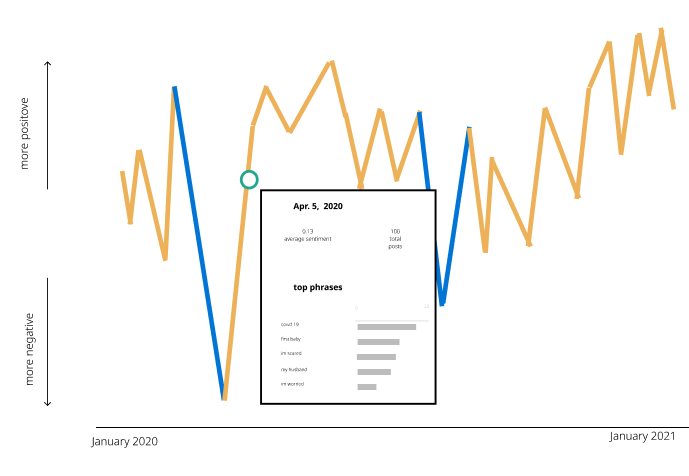
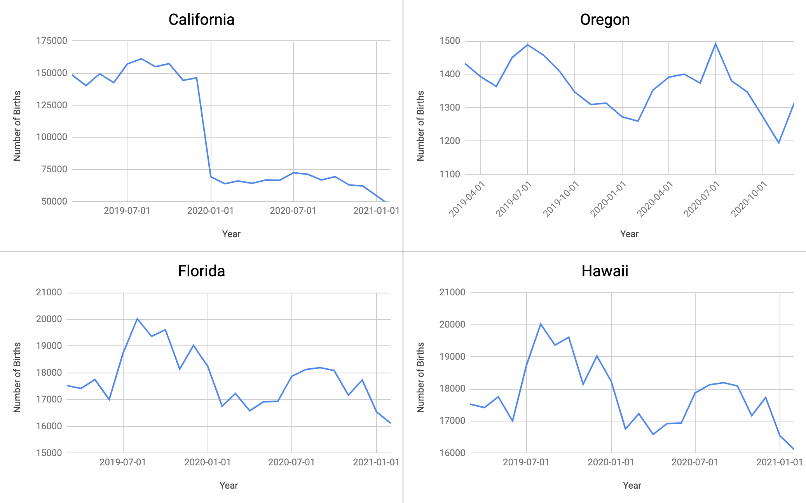
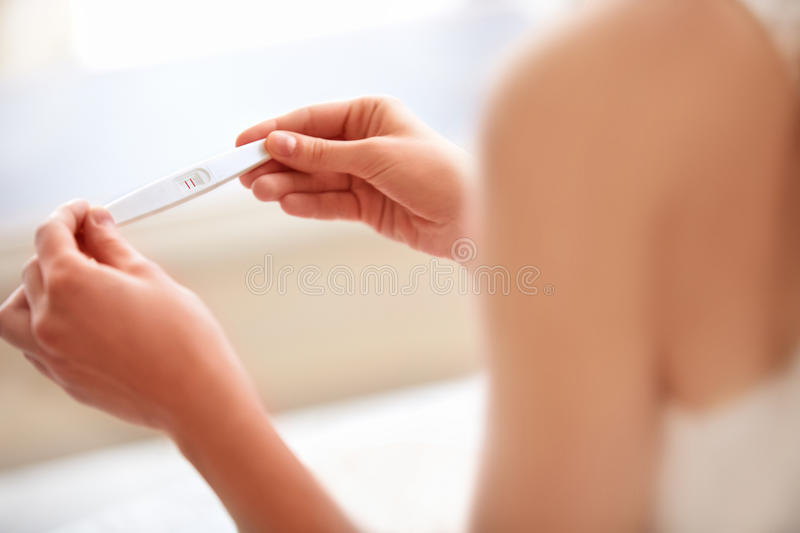
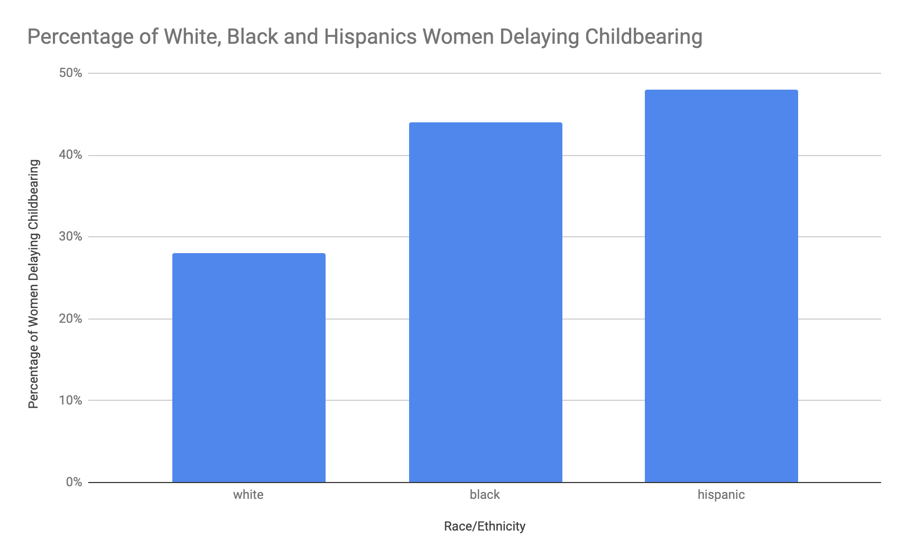

By Szuyu Chen, Sofia Perez and Ryan Corbin
Since the beginning of the pandemic, many could have never imagined experiencing pregnancy in deep isolation. Over the past year, soon to be parents have worried about their safety and seen treasured rituals around birth transformed. Some faced tough choices about whether to even go forward with having a child.
Pregnancy is a time of great stress. You worry about everything from eating the right foods and getting the right vitamins to exercising enough, but also not too much. Being pregnant in the middle of a pandemic adds new and different stressors: isolation, loneliness and fear of the unknown, financial and health security. Many asked themselves, will the hospital allow my partner to be present during childbirth and post birth? Will physically connecting with friends and family be dangerous? Is continuing with my pregnancy during a lockdown a feasible option?
Jordan Capek, a 35 year-old woman was due two weeks after the pandemic lockdown was emplaced. She was scared of going into the hospital and potentially being alone in the delivery room. Capek's doula wasn't allowed in the delivery room, and she agreed to induce baby Celia before she was truly ready, out of fear she would end up in the delivery room completely alone if Covid protocols changed further.
Since the COVID-19 pandemic lockdown hit, people have faced some of the highest rates of unemployment since the Great Depression; many have lost a stable income and others have had to continue to work with minimum pay. Over half a million people have died from the virus with over 31 million people infected, making the United States the leading country in the world for coronavirus deaths and infections. Introducing a baby into the world isn't an easy decision, especially in the midst of a global pandemic and an economic crisis.
Since the COVID-19 pandemic lockdown hit, people have faced some of the highest rates of unemployment since the Great Depression; many have lost a stable income and others have had to continue to work with minimum pay. Over half a million people have died from the virus with over 31 million people infected, making the United States the leading country in the world for coronavirus deaths and infections. Introducing a baby into the world isn't an easy decision, especially in the midst of a global pandemic and an economic crisis.

Jordan spoke to the oppressive nature of the profit-driven healthcare system in the US, which not only makes birth itself extremely expensive, but during the pandemic had forced mothers to get used to an even more isolating pregnancy process. Jordan is sadly not the only one frustrated by this.
Juliet Murray had a panic attack in a vegetable aisle when a man stormed towards a bag of salads besides her. Although they were both wearing a mask, Murray nearly cried thinking of potentially getting exposed to the virus and not being able to protect the baby in her belly. "I was so terrified … just because I saw somebody blatantly disregarding social distancing," said Murray.
Murray discovered her unplanned pregnancy in March last year. It was the beginning of the virus outbreak, and like many others, Murray never expected it to shut down the entire country for more than one year.
For the first two months of her pregnancy, she completely isolated herself at home, not seeing anyone, including her fiance, who worked as a liquor distributor. "It was just so unknown. The fear of … what I am bringing a baby into was really scary because I wanted to protect my baby from anything from day one," said Murray. She did everything she could, from frequently washing her hands and strictly social distancing to always wearing a mask and avoiding going out.
But still, she questioned whether that was enough to protect her baby. "I had to go to the hospital for appointments. I had to deliver traditionally in a hospital. it was unavoidable."
Murray drove herself to her first in-person doctor appointment, checked in while standing six feet away from the desk, distanced from others waiting in the room by themselves. "We are all alone," she thought. The doctors and nurses were in full protective gear but she only had a thin cloth mask. Everyday things that Murray had taken for granted her whole life , such as the buttons in the elevator or the arms of a chair in the waiting room, suddenly became anxiety provoking.
She was allowed to FaceTime with her family during the ultrasound. She held the phone, laid back and heard the first heartbeat with her parents and fiance on the other end of the phone. "My mom started crying … I'm pretty sure my dad cried too, even though he was pretending he wasn't crying," said Murray.
Before the first ultrasound, Murray sometimes wondered whether there was really a small person living in her body because she hadn't felt much. "Hearing that first heartbeat and seeing the little blob on the ultrasound ... just made it real," said Murray. She was ecstatic and wanted to be around everyone she loves. She wanted to shout out, "Hey! I am pregnant!"
But that never happened. She left the hospital and drove herself home. "That was all there was to do. I went home and quarantined," said Murray.
The anxiety and loneliness Murray felt were shared by many.
Around 60 percent of pregnant people are reporting feeling levels of stress and anxiety that interfere with their daily functioning, according to Laura Jelliffe-Pawlowski, the lead researcher of an international study focused on how COVID-19 is affecting those pregnant and giving birth. "We're seeing higher levels than we've seen in any of the other studies," said Jelliffe-Pawlowski.
The reasons vary. Some are concerned about getting infected, some fear being socially isolated and others are worried about the constantly changing hospital practices. According to Jelliffe-Pawlowski, more than 90 percent of the research participants indicate they stay connected to family and friends. "But having those people doesn't mean that you're not feeling depressed and lonely and scared," said Jelliffe-Pawlowski.
Rebecca Joachim, director of Crisis Services at Boston Center for Pregnancy Choices, agrees. "I definitely think that there's been an increase in depression," said Joachim. She has spent more time than usual counseling clients to ensure they received the support they needed. "It can be really isolating and difficult … Counseling would be a huge piece specifically for moms and especially looking at postpartum depression," said Joachim.
Many sought support and suggestions from online platforms like r/Pregnant, a forum on Reddit for people to share their pregnancy and laboring experience.
The mood on r/Pregnant drastically turned negative in mid-March, when COVID-19 cases started rising in the U.S. "COVID-19", "stay home" and "social distance" topped the most used words. These words concluded our lives over the past year but don't fully epitomize how the scale of the pandemic has been extended to more personal decisions, such as delaying childbearing and terminating a pregnancy.
The Brookings Institute estimates that as many as 300,000 fewer children could be born in 2021 than in 2020. Overall, one in three U.S. women said they wanted to get pregnant later or have fewer children because of COVID-19, according to a Guttmacher Institute study.
The drop in the number of children born this year follows a steady decline of the U.S. fertility rates that has been going on for decades. With a sharp decrease driven by the 2008 recession, the fertility rates hit a record low in 2019. Then came the pandemic, bringing many people face-to-face with an uncertain future and forcing them to make tough decisions about pregnancy.
Molly, 30, works in recruitment and asked that her last name not be used because her family isn't aware of her circumstances. Her company cut her pay significantly in an attempt to prevent more layoffs after discharging one-third of the employees in late March last year.
Her husband lost a well-paid restaurant job after his place of employment closed. With the weight of the pandemic, worrisome over finances and losing the stable, job-guaranteed healthcare, he returned to drug use after 12 years of sobriety.
Molly immediately started questioning whether she should keep the baby when she discovered her pregnancy in December last year. They had wanted a second child so their school-aged daughter would have a sibling. Molly went off birth control at the end of February, right before the pandemic hit. "We thought [COVID-19] was going to be a short time," said Molly. But it lasted longer than they had ever imagined.
Her husband's relapse cemented her decision to terminate the pregnancy. "It just felt way too much … I felt like we were not in a place to really bring another person into our home," said Molly.
On the day of the abortion, she arrived 30 minutes early at the doctor's office. No one else was allowed to go in with her due to the virus. She put all her belongings in a locker, put on a hospital gown and was given anesthesia. When she regained consciousness, she was in the recovery room.
"I felt some relief, in the days after ... I did feel confident in the decision," said Molly.
The US government's lack of preparation exacerbated COVID-19's spread throughout the year. Molly is only one example of the many parents that were forced to choose between the potential life of a baby and maintaining their own physical and emotional health due to the government's inability to meet people's basic needs such as housing, healthcare and job security.
"A lot of the people that I have seen have been furloughed ... or have lost their jobs," said Joachim, whose clients are mostly from lower income groups that have been struggling with financial burdens exacerbated by the pandemic.
From the beginning of the pandemic, Blacks and Latinos have faced unemployment rates significantly higher than whites. In the first quarter of 2020, Blacks had an unemployment rate of 6.3%, while Latino workers were at 4.8% and whites at 3.1%. Black and Latina women have seen jobs come back at a slower rate than white women.
"These inequities are really profound in Black and Latino people in terms of COVID exposure and preterm birth. So it's really just one thing on top of another thing for these women," said Dr. Jelliffe-Pawlowski. "We've had several women say they had to choose between keeping their baby safe and having a job. or somebody saying they had to decide between having enough food for their family or exposing their fetus to infection."
Black and Latina women were more likely than white women to delay pregnancy and were also more concerned about accessing sexual and reproductive health services, according to the Guttmacher Institute study. In 2020 48% of Latina women and 44% of Black women said they woudl choose to delay pregnancy.
Dashanna Hanlon, a 32-year-old doula and founder of Caring for Mamas serving mostly people of color, has seen an increase in clients asking for a payment plan or discounts. She joined virtual meetings with other doulas to propose offering free support. "We say who can take someone in July? This person really needs someone for free. It's that kind of thing," said Hanlon.
The uncertainties of the laboring process itself are frightening enough, with the highly transmissive virus in place, more questions and concerns emerged. The possibility of delivering a baby with only one birthing partner. The birth plans that never got followed. And for many Black pregnant women in this country, one extra burden is the intimidating statistics indicating the higher risks for Black women during childbirth. In fact, Black women are 50% more likely to have a premature baby than white women.
People need an experienced helper that knows the ins-and-outs of how to deliver a baby and advocate for them when the wild contraction consumes all of their energy. "People feel like they don't have a choice, especially with COVID and with their masks, they really aren't able to speak up," said Hanlon.
With no extra budget to hire a doula who can advocate for her, Olive Deavers, 31, whose due date is April 29, can only count on her vocal and opinionated husband.
Working for a public health organization as a nutritionist, her daily works involve inspecting and improving state differences in nutrition education, breastfeeding and maternal childhood health.
Deavers wondered, perhaps, with her Master's degree, stable finances and good healthcare, there's a higher likelihood that she could prevent the worst case scenario.
She looked up the maternity death rates in multiple hospitals but the data wasn't available. During her first therapist meeting after getting pregnant, Deavers talked about those numbers and concerns, "I was just like, I really can't do anything about this, you know?". She can only rely on herself and her husband. Instead of a major hospital, they chose a regional hospital with less patients and more personalized care. They familiarized with half of the physicians in the maternity team.
She also has a comprehensive birth plan that includes detailed "objectives" to remind and help her husband advocate for her in the ways she wanted. "My objective is something along the lines of don't let me die, pretty much like do everything that's medically necessary to save me and the child," said Deavers.
Things are getting better after we have learned and adapted to the new kind of "normalcy." Hospital policies have matured. Front-line workers have been vaccinated. We got ourselves familiar with sewing masks and video chatting.
But some things remained. Sharp inequalities in maternity deaths, lack of support for the unemployed and housing insecure while pregnant and prevalent postpartum depression. They existed long before the pandemic but were exacerbated by it.
If there were sufficient protections in place for pregnant people during the pandemic, Murray would have suffered less from anxiety. Molly and her husband, with job security and guaranteed healthcare, could have their options more clear. If pregnant people were included in the vaccine trials in the beginning, Deavers wouldn't be bothered by others' concerns over the potential side effects.
As we are finally seeing a silver lining and almost reaching the end of a long, dark tunnel after idling in it for more than a year, those unresolved rooted issues serve as the reminders that serve as the reminders that more attention and resources are needed, so that these basic needs are not only considered but guaranteed.